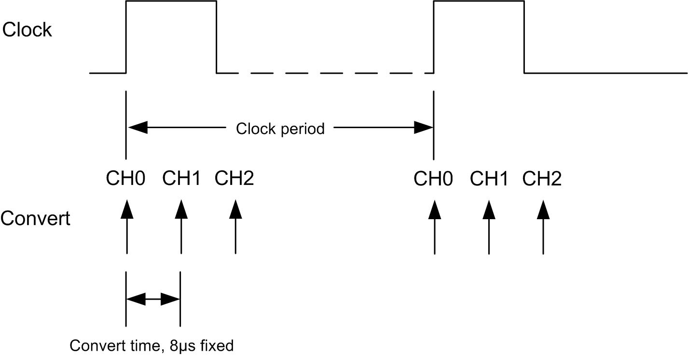

Hardware Overview¶
The MCC HATs are Raspberry Pi add-on boards (Hardware Attached on Top). They adhere to the Raspberry Pi HAT specification, but also extend it to allow stacking up to 8 MCC boards on a single Raspberry Pi.
We provide Python and C libraries, documentation, and examples to allow you to develop your own applications using our boards.
MCC 118¶
The MCC 118 is an 8-channel analog voltage input board with the following features:
- 12-bit, 100 kS/s A/D converter
- ± 10 V single-ended analog inputs
- Factory calibration with ± 20.8 mV input accuracy
- Hardware sample I/O clock
- Onboard sample buffers
- Digital trigger input
{kind=link}
Board components¶
Screw terminals¶
- CH 0 In to CH 7 In: Single-ended analog input terminals.
- Clock: Bidirectional terminal for pacer I/O. Set the direction with software. Set for input to pace operations with an external clock signal, or output to pace operations with the internal sample clock.
- Trigger: External digital trigger input terminal. The trigger mode is software configurable for edge or level sensitive, rising or falling edge, high or low level.
- AGND: Common ground for the analog input terminals.
- DGND: Common ground for the clock and trigger terminals.
Address jumpers¶
- A0 to A2: Used to identify each HAT when multiple boards are connected. The first HAT connected to the Raspberry Pi must be at address 0 (no jumper). Install a jumper on each additional connected board. Refer to the Installing multiple boards discussion for more information about the recommended addressing method.
Status LED¶
The LED turns on when the board is connected to a Raspberry Pi with external power applied. You can flash the LED with software.
Header connector¶
The board header is used to connect with the Raspberry Pi. Refer to Installing the HAT board for more information about the header connector.
Functional block diagram¶

Functional details¶
Clock mode¶
The clock input / output on the MCC 118 is used to output the internal sample clock or apply an external sample clock to the device. Each pulse on the clock initiates a series of conversions of the selected channels in the scan. For example, when scanning channels 0, 1, and 2 the conversion activity will be:
{kind=link}
Specifications¶
MCC 134¶
4-channel thermocouple input board
- 24-bit A/D converter
- Onboard 16-bit temperature sensor for cold junction compensation
- Linearization for J, K, R, S, T, N, E, B type thermocouples
- Open thermocouple detection
- Thermocouple inputs are electrically isolated from the Raspberry Pi for use in harsh environments

Board components¶
Screw terminals¶
- CH 0 In to CH 3 In: Differential thermocouple input terminals.
Status LED¶
The LED turns on when the board is connected to a Raspberry Pi with external power applied.
Header connector¶
The board header is used to connect with the Raspberry Pi. Refer to Installing the HAT board for more information about the header connector.
MCC 152¶
2-channel analog output / 8 digital I/O board
- 12-bit D/A converter
- 0 - 5V output
- 5V / 3.3V selectable digital I/O
- Programmable pull-up/pull-down resistors
- 25mA sink per output
- Interrupt on input change

Board components¶
Screw terminals¶
- AO0 to AO1: Analog output terminals.
- DIO0 to DIO7: Digital input/output terminals
Status LED¶
The LED turns on when the board is connected to a Raspberry Pi with external power applied.
Header connector¶
The board header is used to connect with the Raspberry Pi. Refer to Installing the HAT board for more information about the header connector.